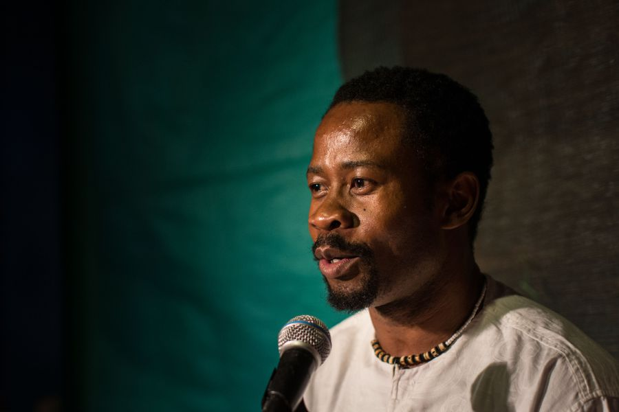
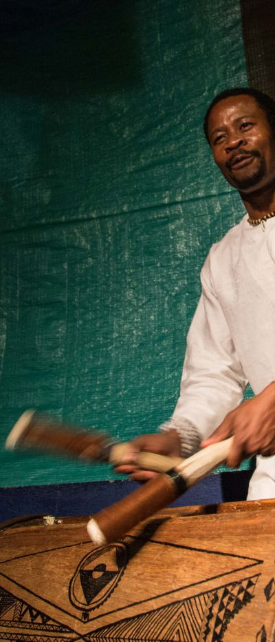
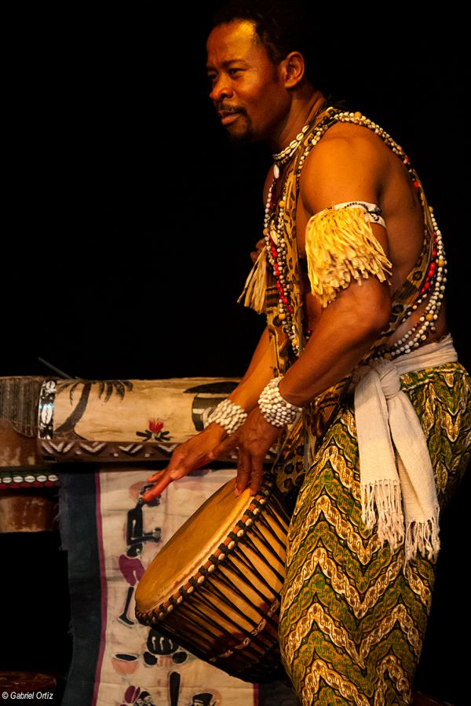

Gorsy Edú
Hijo de la tierra y el ritmo
Por: María Camila López Isaza
«Si los grandes sabios descubrieron que la naturaleza estaba formada por cuatro elementos: tierra, fuego, agua y aire, en África, nuestros antepasados tenían la certeza de que para que hubiera vida, existía un quinto elemento: el ritmo».

Esta premisa es la puerta de entrada, la invitación abierta a un viaje llamado El percusionista. Escrita e interpretada por el ecuatoguineano Gorsy Edú, la obra es un recorrido emotivo y fuertemente evocador por la cultura y la filosofía del continente africano. El reconocimiento a la tradición oral de un pueblo que se instaura en nuestros orígenes y se hace infinito a través del legado de sus ancestros. La música es el recurso que unifica la historia, acompaña la narración y llega al galopante corazón del espectador en los sonidos certeros, rítmicos y precisos del tambor. El percusionista baila, canta, toca y cuenta la vida en la aldea, la relación con el otro, la sabiduría expresada en el relato del abuelo, y el desarraigo que implica dejar la tierra para partir como inmigrante a Europa. El espectáculo, que ya ha llevado la experiencia a países como España, Marruecos, Portugal, Argentina, Paraguay, Bolivia, Cuba y República Dominicana, llegó el año pasado a Medellín durante la Décima Fiesta de las Artes Escénicas. Fue tal la acogida por parte del público de la ciudad, que este año regresó para la Onceava, compartió el encuentro con nuevos y antiguos asistentes, y extendió sus presentaciones a otros municipios de Antioquia, e incluso a la capital del país. Tal vez el éxito de esta representación multisensorial radica en su increíble capacidad de involucrar al espectador en una historia que termina siendo suya; en un ritual del cual es partícipe importante. La magia de Gorsy está en su capacidad de reconstruir la Casa de la Palabra —ese espacio tan propio de su aldea; la cuna de los relatos más tradicionales de su pueblo— en cualquier auditorio, de cualquier continente. Después de su visita, Medellín tiene una relación inquebrantable con El percusionista: no solo viajamos a una tierra madre; reconocimos en ella nuestra propia identidad.
Esta no es la historia de un hombre; es el relato de un pueblo. La aventura —quizá pretenciosa— de poner entre líneas el alma de una cultura ancestral y, probablemente, quedarse corto en el intento. Es una historia compuesta de otras tantas. Es la música, la palabra, la danza, el espíritu de la tierra. El retrato de un origen lejano que es también nuestro. Es Guinea. Es África en la piel y los latidos de uno de sus hijos.
Se llama Gorgonio Edu Abaga Esaha. En cada apellido un recuerdo, una familia y una canción… Para nosotros es Gorsy. Gorsy Edú.
Sin lugar a dudas, el hilo conductor que une cuidadosamente todos los episodios de su vida es el anhelo diario de muchos y la compañera de camino de solo unos pocos: la suerte. Reconoce que andan juntos; no la busca, pero ella siempre lo encuentra. Asertivos y oportunos golpes de suerte ha tenido este hombre desde el instante mismo en que nació. «Mis orígenes son los más sencillos del mundo. Yo nací en Guinea y fui prematuro. Nací con siete meses y, a partir de allí, me acompaña la suerte porque sobreviví».
Con quince años, su madre dio a luz en la cocina de una aldea ubicada en la ciudad de Ebebiyín, Guinea Ecuatorial. A diferencia de lo que sucede en Occidente, la cocina africana constituye un importante punto de encuentro. No se acude allí para realizar una actividad mecánica y cotidiana; en la cocina se vive y se comparte un ritual de comunidad. «Allí transcurre todo: es donde se cocina, donde están los niños jugueteando. La mayor parte de las horas del día se pasan ahí […] entonces el 90% de los niños nace en la cocina, porque es el sitio con más espacio».
Orígenes
El primer día de vida en la aldea es un asunto casi premonitorio: la presencia colectiva que acompaña el alumbramiento es la misma que enseña y protege a lo largo de toda la existencia. Se nace en medio de la gente que construye y mantiene la identidad del pueblo. Se crece entre tambores y una tradición oral invaluable. La infancia de Gorsy fue, más que un período de juegos y travesuras, la construcción de una memoria rica en imágenes y matices, contada y cantada por la voz de los mayores. «A la vez que vas creciendo, vas asimilando las historias de alguna manera. Cuando eres pequeño, muy pequeño, con lo único que te quedas es con las canciones. Y hay cuentos que te vuelven a repetir y otros que son nuevos, porque cada abuelo tiene un repertorio importante […] también escuchas otros en la cocina cuando te los cuenta tu abuela […] todos los recuerdos que tengo de mi infancia son sagrada escuela, es el pueblo entero. Como dicen: para educar a un niño hace falta toda una aldea».
La Casa de la Palabra, conocida como Abha, fue y ha sido parte importante de la formación cultural e histórica de los pueblos subsaharianos. Para Gorsy representa el espacio de intercambio de narraciones; el punto de simbiosis entre la escucha y la conversación; el resguardo después de un día de trabajo en el bosque y la base sobre la que se edifica la esencia de una etnia. «La Casa de la Palabra es el lugar más relevante. Se junta, sobre todo, la gente mayor, porque ahí desarrollan muchos de los oficios. El escultor está allí, el que está tejiendo las redes, el que fabrica los instrumentos. Todo se desarrolla allí […] Las mujeres no están prohibidas en la Casa de la Palabra […] van cuando sale la comida o cuando hay que hablar de algo, un tema en especial. Sobre todo en las bodas, la suegra es la que tiene la última palabra, en el sentido de que es la que da la bendición».
No obstante, el amplio proceso de formación que suponía la crianza en la aldea se vio interrumpido para Gorsy desde los cuatro años de edad. El trabajo de su padre le abrió camino a una infancia itinerante que hizo posible una apertura al mundo, más allá de su pueblo. A primera vista, un cambio contundente y avasallador para un niño de su edad. En el caso de Gorsy, una sutil manifestación de esa suerte omnipresente, que le mostró, siendo tan pequeño, interesantes porciones de la realidad de su país. «Mi padre era marinero y siempre crecí en las costas, nunca repetí colegio […] cada vez por vez íbamos al pueblo, tanto al de mi mamá como al de mi papá […] Más que viajes, eran estancias de un año. Yo iba a un colegio y cuando terminaba el año, le cambiaban de destino a mi padre […] Nunca me adaptaba, pero era lo que tocaba. Tenía que asimilarlo. […] Guinea Ecuatorial tiene cinco etnias y las etnias somos diferentes en todo. Cuando te digo todo, son las tradiciones, la lengua, las costumbres […] Pero compartir colegio con otros niños me ayudó también a ver la universalidad de la cultura de Guinea».
La separación de sus padres, a los nueve años de edad, es un episodio que recuerda someramente en imágenes difusas. Sin embargo, el fin de una unión marital implicaba cambios sustanciales que, por ley, no podían ser evadidos. «En el matrimonio africano, la mujer deja su familia para pertenecer a la familia del marido. En una relación no matrimonial, los hijos que nacen allí, en caso de separación, pertenecen a la familia de la madre. No hay discusión. Pero cuando se casa, como la mujer pasa a formar parte de la familia del esposo, los hijos y todo pertenecen a la familia de él. Porque nuestras relaciones no son individuales; son de comunidad. Un matrimonio es la unión de etnias, de tribus, donde se concuerda que la familia de la chica pierde a una hija. Pero en caso de separación, eso ya se disuelve. Significa que la mujer vuelve a estar libre, pero los hijos pertenecen a la familia donde ella estaba […] entonces qué pasa: como los hijos muy pequeños necesitan de la madre, si son menores de siete años la ley lo que permite es que los niños estén con la madre. Pero los que son mayores de siete, se supone que ya pueden sobrevivir, entonces están con el papá. Todo el mundo sabe esto y cuando hay una separación, se tiene en cuenta. Y como yo ya tenía nueve años, me quedé con mi padre».
El asentamiento llegaría un año después, poniéndole fin a una vida nómada que había llevado casi toda su infancia. A los quince, estando ya en Malabo, capital de Guinea, una serie de encuentros bastante afortunados alinearían su camino con otro que, hasta ese momento, no había considerado como opción: el del arte. «Yo quería estudiar Medicina. En aquella época, para estudiar la carrera había que salir con una beca. Éramos muchos estudiantes y yo seguía esperando». Sin mayores pretensiones, y mientras esperaba la oportunidad de hacerse a una beca, Gorsy comenzó a hacer teatro en el Centro Cultural Francés y en la escuela de circo del Centro Cultural Hispano-Guineano, siendo este último el punto de encuentro con quien sería su primer mentor. «En la escuela de circo conocí a la persona que ha sido la más relevante en mi vida a nivel artístico: Marcelo Ndong. Ese hombre estudió en España y, cuando llegó a Guinea, tenía ganas de continuar y formar chicos […] Tenía las ideas claras y me ayudó bastante. Lo primero que dijo fue, “la profesión de ser artista es la más compleja, porque cada día te tienes que examinar a ti mismo”. La Escuela era como una pequeña familia que teníamos allí, y como yo era el mayor, pasé de ser alumno, a ser la mano derecha de Marcelo […] Hay una persona que también sería injusto si no la nombro, que es Enrique León. Era uno de los animadores del Centro Cultural Hispano-Guineano. Él es español y era muy amigo de Marcelo, los dos trabajaban allí […] cuando llegaron las becas, me dieron la oportunidad de seguir estudiando en Europa».
Y la beca llegó. Pero no para Medicina. Por intervención de Enrique León, dos cupos para Teatro estaban disponibles; cosa extraña tratándose de Guinea Ecuatorial. ¿Otro golpe de suerte? «La beca nuestra fue una casualidad, porque para arte no llegaba ninguna […] entonces él (Kike León) hizo como una especie de convenio con su ciudad, Cantabria-Santander, para que pudiesen dar dos becas de Perfeccionamiento de Teatro. Llevaron cuatro: dos para estudiar arte y diseño, y dos para estudiar teatro, solamente un año». Se decidió que lo más justo sería elegir a un hombre y una mujer para que viajaran a Europa. «¿Cómo llega a mí? Dos años antes se había hecho un festival de teatro infantil y tuve la suerte de, dos veces consecutivas, ganar el premio a mejor actor. Entonces fue como una recompensa del trabajo […] Salimos en el año 1996 para España».

Resulta contradictorio que, siendo la música y la oralidad los dos recursos por excelencia para la educación en su aldea, Gorsy haya tenido que defender ante su familia la decisión de estudiar Teatro en Europa. De todas las fronteras geográficas y culturales que separan a Occidente del África Subsahariana, las reticencias hacia el arte como oficio y elección de vida terminan siendo un asunto común en ambos bandos. «Cuando obtuve la beca para estudiar, mi padre y mi madre fueron las únicas personas que no cuestionaron mi carrera. Todo el mundo la cuestionó, porque en la familia todo el mundo opina. Decían, “tú eres el primogénito, tú querías estudiar Medicina. Teatro, ¿qué es teatro?”. Entonces no entendían cómo iba a ser artista teniendo la responsabilidad que supone ser primogénito. Muchos me aconsejaron, “te vas a Europa y cuando llegues allí, cambias la carrera”. Como si fuera fácil».
La beca en Europa era ya una hazaña cumplida. El sueño que empezaba a materializarse gracias a Enrique y Marcelo, esos dos aliados que, sabiamente, la Madre Natura había puesto en el lugar y momento indicados. Pero, ¿qué sentido tiene vivir con suerte, si esta no le enseña a su protegido a defenderse cuando se ausenta? Tal vez sea esa la prueba de fuego para saber si aquel individuo es digno de quedarse con su amparo. La llegada a España sería, indudablemente, la prueba decisiva para Gorsy. «Fue compleja por una sencilla razón: el curso empezaba en septiembre y terminaba en junio. Nosotros llegamos en febrero, es decir, llegamos a mitad del curso y la beca solo era de un año […] Guinea Ecuatorial tiene la cultura española, pero no es lo mismo algo que ves desde tu país, a cuando vas a vivir en la misma sociedad. Había cosas muy similares porque estudiábamos en castellano, pero estar allí cambia completamente todo. La comida, el clima, la adaptación fue complicada. Y cuando llegó junio, no pudimos aprobar porque las evaluaciones eran continuas y, como teníamos tres meses perdidos, no nos hicieron pasar el curso».
El siguiente paso era entonces regresar a África. Aun así, tratándose de un personaje con suerte, cualquier giro en la historia es completamente válido. «Lo que hizo el rector de la universidad fue decir que él podía conseguirme una beca para hacer los cuatro años de Arte Dramático. La única condición era que yo no podía suspender un curso y, si lo suspendía, pues me tenía que volver […] empecé otra vez desde el primero hasta el año 2000, que terminé la carrera».
«Quien tiene un abuelo, tiene un tesoro»
Faltaban todavía nueve años para que El percusionista se montara a un escenario y conmoviera a públicos enteros de tres continentes distintos. No obstante, los caminos recorridos hasta ese momento eran materia prima del texto que, en la voz de un solo personaje, recopilaría magistralmente el espíritu de la condición humana. Cada experiencia de Gorsy en Europa tenía un poder evocador que lo llevaba de vuelta a Guinea. Toda su vida estaba llena de encuentros dignos de ser contados. Durante los veranos en la época de universidad, uno en particular, le devolvió la preciada figura del abuelo africano. «Me metí a la Cruz Roja, allí estudié masaje deportivo terapéutico y auxiliar de enfermería geriátrica. El contacto con los mayores me hizo revivir un poco la imagen del abuelo, de la persona mayor […] Estaba cuidando a un abuelo y siempre me hablaba de su hijo Rodolfo; me enseñaba la carta que le había escrito y era una persona que empezó a perder un poco la memoria. Cuando pregunté a las enfermeras que yo quería ver a Rodolfo, resulta que era un señor que llevaba un año sin ver a su padre. Él mandaba dinero todos los meses, pero nunca iba. Entonces fue una imagen muy importante para mí […] Él me llamaba negrito y yo le llamaba papá. Nunca pregunté su nombre:
—Papá, ¿qué tal estás hoy?
—¡Ahh, negrito!
En Guinea, para los mayores está muy feo que tú le llames por su nombre. Lo llamas papá o mamá, o tío, aunque no lo conozcas». Fueron dos veranos los que compartieron juntos. El padre del ausente Rodolfo comenzó a deteriorarse a raíz de la enfermedad. No guardaría a Gorsy en su memoria, pero el negrito sí lo conservaría en la suya. «[..] lo encontré triste, no sé qué le había pasado. Yo me siento, lo miró así, y él se me queda mirando, se me queda mirando. Me dice la enfermera, “está peor ahora y no te va a reconocer. No sabe quién eres”. Fue muy fuerte para mí». Papá murió, quizá sin la compañía de su hijo Rodolfo. No sabrá nunca que ya hace parte de una historia, la de El percusionista. No sabrá nunca que, gracias a él, quien tiene un abuelo, tiene un tesoro.
Centro Dramático Nacional y L'Om Imprebis
Una vez terminada la carrera, en el año 2000, el siguiente reto fue el Centro Dramático Nacional. Su debut fue en La visita de la vieja dama, una tragicomedia del suizo Friedrich Dürrenmatt. «Eso fue una ventana donde otras producciones, otras compañías pudieron verme». El hecho más significativo ocurriría ese mismo año, cuando su padre fue por primera vez a verlo sobre las tablas. Aunque nunca reprochó la elección de su hijo, no era difícil suponer que tenía las mismas prevenciones del resto de la familia con respecto al arte. «Cuando actué en el Centro Dramático Nacional, él era director de correo y todos los años iba a España a hacer las evaluaciones anuales. Coincidió en el año 2000, que estábamos estrenando La visita de la vieja dama. El estreno era en el Teatro María Guerrero, entonces fueron los príncipes a ver la obra. Yo lo invité para que estuviera y allí había tres negros nada más. Había otro compañero cubano que era negro, estaba yo y estaba él […] Cuando terminó el espectáculo, salí y cuando me saludó, me abrazó, me cogió la mano y la apretó. Ese signo —se lo he preguntado con el tiempo—, era su máxima expresión de alegría, y a partir de ahí cambió bastante su visión«. Es inevitable que, al traer de vuelta ese instante a la memoria, los ojos de Gorsy se tornen más húmedos que de costumbre y deba hacer una pausa en el relato. Finalmente, el padre había entendido la esencia del oficio del hijo. «Sabía que era una carrera difícil, pero que yo había apostado, había luchado bastante; eran cuatro años […] a partir de ahí, es mi fan número uno».
Después de La visita de la vieja dama, una serie de montajes posteriores ampliaron su trayectoria escénica. «En el año 2001, hice una obra que se llamaba Dulce pájaro de juventud, de Tennessee Williams. Y en el 2004, es cuando conozco a otra persona muy relevante en mi vida: Santiago Sánchez, el director de la compañía L'Om Imprebis […] de él ya me habían hablado mucho y a él le habían dicho que había un guineano que estudiaba en España. Pero no nos habíamos visto. Mientras yo trabajaba en el Centro Dramático Nacional, en un proyecto que se llamaba Los verdes campos del Edén, el protagonista vio en internet que había una compañía que buscaba actores de muchas razas. Mandé el mail, llamé, y justamente cuando voy al casting es cuando me presento: “Me llamo Gorsy, soy de Guinea Ecuatorial”. Y el director dice: “¿Tú eres Gorsy? Pues esta es la compañía L'Om Imprebis” […] tuve la suerte de que el casting fue bueno y me tomó para hacer el espectáculo. En el 2008, creamos el proyecto Orígenes, que era la formación de actores para crear una compañía estable en Guinea […] la compañía ya existe, ahora simplemente hay que darle el empujón a nivel administrativo, porque lo que nosotros queríamos era crear el proyecto, pero que la Compañía fuera de Guinea; que la propia administración del Ministerio de Cultura sea la que se haga cargo de él. En eso estamos».
El percusionista
Escribir una obra no era su proyecto de vida, pero sí —lo sabría más adelante— el momento para el que se había estado preparando desde sus primeros años. Aún sin ser consciente de ello. «Primero tengo que decir que jamás me había planteado la idea de escribir algo. Nunca me creí con la capacidad de hilar ideas. Yo estudié interpretación y lo que podía hacer era eso. Lo que sí es verdad es que tenía ganas de mostrar Guinea, porque ya había tenido muchos encuentros con artistas africanos de Senegal, de Mali, y veía cómo el África del Oeste era muy conocido en Francia y en Bélgica, sobre todo, por el tema del idioma». La dramaturgia —que empezó a escribirse en 2008—, fue iniciativa, quién lo pensara, de Elizabeth, una inglesa que quería plantear la reflexión sobre los casos de inmigración en Europa. «Dos años antes (2006), yo trabajaba con una organización que se llama Art et Musique. Música para salvar vidas. Es una ONG que está en España; la directora es una señora inglesa y tiene un orfanato en Uganda. Los chicos formaron un coro y venían a actuar en España. Hacían una gira y con el dinero que recaudaban allí, se mantenía el orfanato. Entonces, tuve la suerte de contactarme con ella, la conocí y entré al proyecto como percusionista. Un día invité a Elizabeth para que fuera a ver un espectáculo de la compañía con la que trabajo. Estábamos haciendo Don Juan Tenorio […] Cuando ella me ve, me dice: “Nunca te relacionaba con el teatro, te relacionaba siempre con la música. Si tú eres actor, ¿por qué no escribes algo de los inmigrantes?”».
¿La razón? «Siempre que íbamos de viaje, cuando los chicos entraban a una cafetería, como eran muchos negros a la vez, había una cosa curiosa de la gente que miraba, y a ella no le gustaba eso […] entonces decía, “quiero que escribas algo. Darle voz a los inmigrantes que llegan a Europa para despertar conciencias. Escríbelo y te lo vendo”».
El nombre inicial de la obra fue Historias de África, de Gorsy Edú. Con una experiencia nula en producción textual, el aún incipiente dramaturgo empezó a explorar las posibilidades para construir lo que sería, finalmente, El percusionista. Ante las dudas, el mejor consejo vino de su padre. «Como ya tenía claro que ella quería que yo hablase sobre la inmigración, empecé a escribir el texto desde el final. Y llamé a mi padre, le dije, “me han encargado un proyecto para escribir y no sé qué contar. Quiero contar cosas de Guinea”. Mi padre me dio una clave. Dijo: “Mira la vida desde los ojos de un niño y ya verás cómo se te van a venir las ideas”. Claro, el niño observa, no juzga. Entonces empecé a recordar todas las anécdotas de mi infancia, incluso anécdotas que no son de Guinea; que son de mi entorno, de lo que veo. Pero la observación sí fue la de un niño. Ahí empecé a armar el espectáculo».
La dramaturgia de la obra tuvo dos fases: una consistió en escribir todas las ideas que surgían; y la otra, en compartir lo escrito con varios amigos e ir depurando hasta darle forma al texto original. La técnica de los griots —narradores orales del África Occidental— aprendida durante un montaje con la Compañía L'Om Imprebis, fue igualmente una herramienta esencial para hallar la forma adecuada de unificar el relato. «Tuvimos un taller de cuatro o cinco meses con un griot, Hassane Kouyaté, que es justamente el hijo de Sotigui Kouyaté, uno de los discípulos de Peter Brook. Ese tío es un gran griot y nos enseñó las técnicas de cómo se escribe un cuento y cómo se cuenta un cuento. Lo que hice fue coger toda la estructura de las historias en las aldeas, pero con la técnica griot […] lo que también agradezco es que está la sabiduría ancestral; luego está la formación actoral, que me ha ayudado a darle estructura a la historia».
El percusionista contó con la misma suerte de su autor. Durante el proceso de construcción del texto, el rodaje de Querida Bamako (2007), película de la cual Gorsy era uno de los protagonistas, fue la oportunidad para conocer de primera mano la realidad de los inmigrantes africanos. «Narraba la historia de la ruta que hacen los inmigrantes desde el África Subsahariana hasta llegar a Europa. Era una película documental donde sí compartíamos impresiones con la gente que había hecho la ruta real; con inmigrantes reales en España. Empezamos en Burkina Faso. Al llegar a Marruecos, ya no teníamos actores secundarios negros. Teníamos que recurrir a inmigrantes reales. Ahí es donde conocí a un chico nigeriano, que es el que me contó la historia del desierto, de cómo les iban soltando a mitad del camino. Pero la historia era muy dramática, porque va más allá y se muere un amigo suyo porque come arena. Entonces, se salvan gracias a que estaban tocando una cantimplora vacía que tenían para hacer un ritual de enterramiento, y es cuando los nómadas, por la noche, escucharon el sonido y fueron a rescatarlos porque sabían que en esa parte no podía haber gente. Así sobrevivieron».
La intención era clara: contar, en la historia de un nigeriano, la realidad de miles de africanos. Darle voz a los protagonistas de un fenómeno multitudinario y acallado. «Empecé a armar la historia, la parte final, de lo que supone estar lejos de los tuyos; cómo llegar a un sitio donde no conoces a nadie, cómo la propia sociedad se auto engaña, porque nosotros mismos, los inmigrantes en Europa hacemos un efecto llamada: nunca contamos nuestra realidad. Contamos que me he comprado un coche, que una cosa va bien. No contamos que no hay trabajo». Si bien el tema inicial que motivó el proyecto fue la inmigración, el objetivo de mostrar las dinámicas culturales de Guinea, también encontró su lugar dentro de la obra. «Cuando mi padre me dice que mire la vida desde los ojos de un niño, es cuando reflexiono: pues voy a contar la importancia de la música en mi aldea; voy a contar un poco de mi abuelo y de los abuelos, enganchando con el papá de Rodolfo […] el espectáculo se ha modificado bastante, fue creciendo desde el 2008 hasta ahora. El personaje va madurando, va descubriendo más cosas».

El percusionista en palabras de su autor
«Es un espectáculo que, afortunadamente, gusta. Se ha presentado en tres continentes: África, Europa y América Latina. Entonces creo que hay una cosa que tiene, que es la universalidad de los mensajes. Habla desde el ser humano.
Muchas veces, los grandes clásicos —Shakespeare, Moliere, Cervantes— perpetúan en el tiempo porque no tocan a una época, sino al ser humano […] El percusionista tiene esa parte: si alguien nace es porque alguien lo ha parido; y a ese alguien otro alguien lo ha parido. Lo cual, todo el mundo tiene abuelo, que todavía viva o no, pero todo mundo tiene abuelo. Entonces hay un punto ahí que me pasa: hay gente que viene a ver la obra recordando a su abuelo y otros vienen añorando a su abuelo […].
Luego está la parte de los miedos. Cuando hablo de la inmigración y del rechazo, no hablo desde el punto de vista del racismo, desde el punto de vista blanco a negro, o negro a blanco. Hablo de la inmigración desde el desconocimiento de uno mismo […] Cuando hablo de ese factor de no conocerte, no sentirte en tu entorno, no sentirte comprendido, eso también toca a cualquier ser humano. De alguna manera, alguien se ha sentido extraño en su vida. Eso también está ahí, los miedos que tenemos: el miedo al otro, el miedo a uno mismo. Luego está la parte del lenguaje de los dioses, que es la música, porque te va llevando. Está el tambor, que apela al corazón. Está la melodía, que apela al alma.
Hay muchísimas denuncias dentro de mi espectáculo. Cada texto, cada palabra, tiene doble sentido. Entonces cada uno lo lee como quiera […].
La acogida es igual en Guinea, que en Cuba, que en Colombia, que en Madrid. Igual. La gente contesta, la gente tararea. Eso es lo que hace bien al alma, porque no atiende a limitaciones de raza, ni de geografías, sino directamente al mensaje.
El asunto que tengo con El percusionista es que no soy yo. El personaje habla en primera persona, pero no es Gorsy. Entonces ese distanciamiento también hace que haya esa relajación […] Si hubiera sido autobiográfica del todo, no sé si hubiera sido capaz de escribirlo y mostrarlo, porque las emociones serían tan fuertes que no podría hacerla […] lo que me salva es eso, que es un personaje que tiene mucho de mí, porque sí uso recursos reales […] en el momento en que empieza a sonar el tambor, ya no soy yo: es el personaje».
Es absurdo pensar que la suerte que durante décadas ha acompañado a este hombre, se reduzca a una simple cuestión de azar. Lo cierto es que la Madre Natura, esa fuerza sabia e inconmensurable con la que tiene un vínculo eterno, ha sabido equilibrar la fortuna y la adversidad en la vida de Gorsy, llevándolo a hacer del arte —de su arte— el medio para compartir su origen, su realidad… su alma. Piensa en el ahora, procura vivir a plenitud el presente como una forma de conservar el ritmo de la existencia. «Todavía sigo con El percusionista hasta que el cuerpo aguante. Y lo que estoy haciendo es participar en proyectos culturales con el Gobierno de mi país […]. Santiago Sánchez, el director de la Compañía, va a montar el año que viene una obra clásica en el Centro Dramático Nacional, Aquiles y Pentesilea, entonces trabajaré con él como actor y ayudante de dirección […]».
Pronto serán veinte años desde que llegó por primera vez a España y empezó a moverse entre dos culturas completamente distintas y distantes. Con el tiempo, aprendió a adaptarse a cada dinámica y a entender la vida desde ambas latitudes. «El cambio es radical. Pero lo que sí me ayuda es una cosa: tengo la capacidad de cambiar el chip completamente. Y me ayudan las horas de avión (risas). Siempre lo digo: cuando estoy en España, no pienso en Guinea. Cuando voy a Guinea, no pienso en España. Eso también me hace ver las cosas con perspectiva. Vivir así es intenso, porque son dos energías, son dos tempos diferentes. No puedes ir a Guinea con el ritmo de España, porque te ahogas. No puedes ir a España con el ritmo de Guinea, porque te quedas atrás».
He aquí una mínima porción de la esencia de un hombre que es tribu, pueblo, memoria y país. He aquí un esbozo del artista que ve el mundo con ojos de niño, para despojarse del juicio y la rigidez. En su corazón, el golpe constante del 'nkúú*. En las piernas y los brazos, una hermosa danza ancestral. Y en su voz, la inmensidad de la tradición oral, contenida en estas últimas palabras:
«El tiempo no se gana ni se pierde, se comparte».
*Se pronuncia: unkú. Instrumento musical africano, utilizado como medio de comunicación entre poblados, por la potencia de su sonido.
Entrevista tomada de la edición No. 42 del periódico de Medellín en Escena